手工采摘
采摘过程中珍视每一枚茶芽，细心对待这份珍稀的茶源。
珍视每一枚茶芽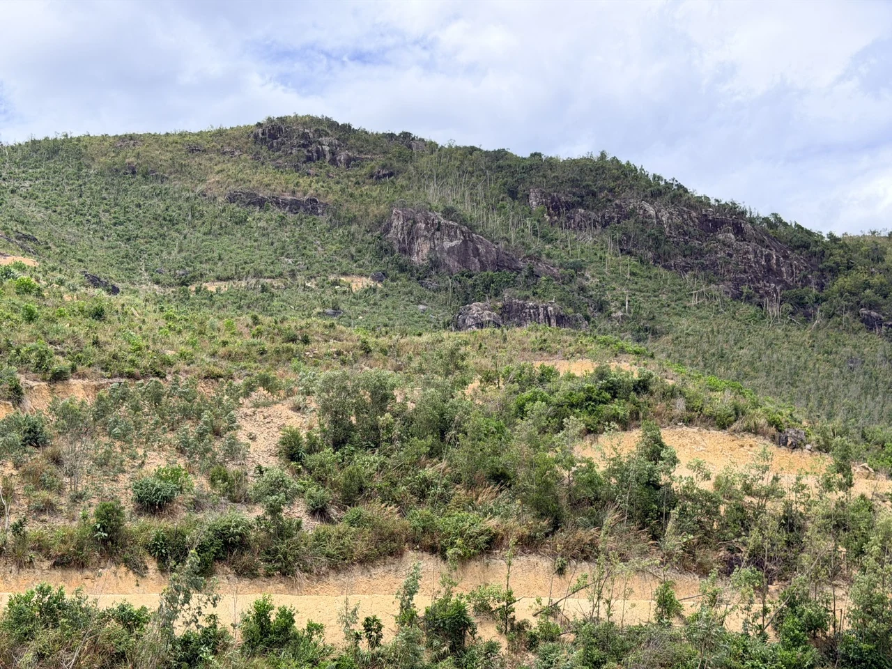
茶的故事
有些土地，不仅孕育茶树，更赋予茶叶独一无二的风土个性。
在越南中部的 Cù Mông 山脉，TS 567 海茶——Mã Dọ 茶生长于山林与海洋气息交汇之处。在这片独特的自然环境中，茶树依循当地的自然节律生长，形成自己的风土印记。
TS 567 海茶无意追求规模化生产。我们珍视茶区与每一次采摘，精心挑选茶芽，以手工方式采收。这份茶的背后，是当地独特的自然条件，也是多年来守护茶区之人的耐心与心血。
对我们而言，TS 567 海茶的价值不在于它有多普及，而在于孕育它的土地所赋予的独特个性。它讲述自然的馈赠、对珍稀茶源的守护，也承载着将越南茶叶的本真价值带给真正懂茶之人的愿望。
TS 567 海茶——不止是一杯茶，更是 Cù Mông 山林留在每一盏茶中的印记。
茶品介绍
Mã Dọ 茶是一款珍稀的越南特色茶，制作时始终珍视 Cù Mông 山区的天然本味。
TS 567 海茶 · MÃ DỌ 茶
注重品质、细腻风味与真实本色。尚未确认的感官特征和成品规格将在核实后补充。
顺应茶区的自然节律
TS 567 海茶并非规模化生产。目前每两个月约收获 20 公斤茶鲜叶；实际采收量随茶区的自然条件与茶树的生长节律而变化。
这份有限不仅赋予茶品独特性，也体现我们所坚持的理念：尊重自然，守护当地茶区，保留茶叶的本真价值。
我们不以高产为目标，而是珍视自然所给予的每一批茶叶，让悉心甄选的茶品呈现独有价值。
茶区
越南中部的 Cù Mông 山区，茶树生长在山林与海洋气候交融的环境中。下方照片聚焦茶树与山坡景观；各张照片的具体拍摄地点仍待核实。
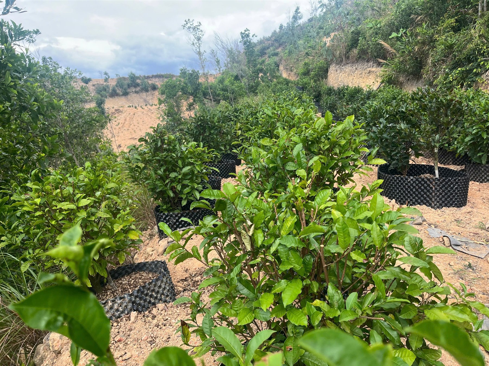
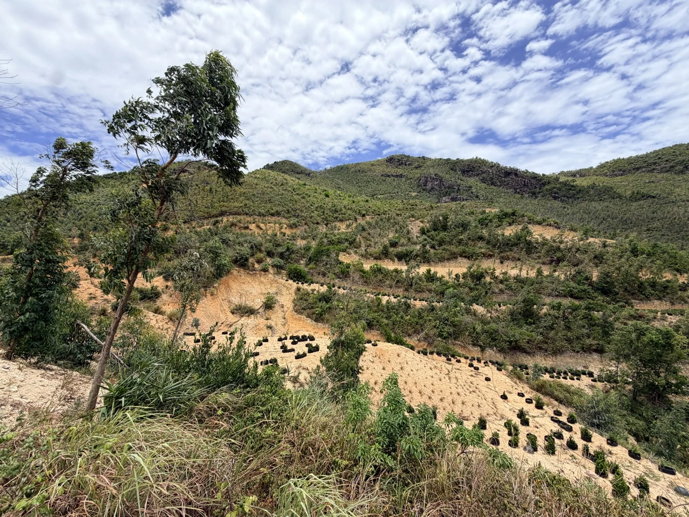
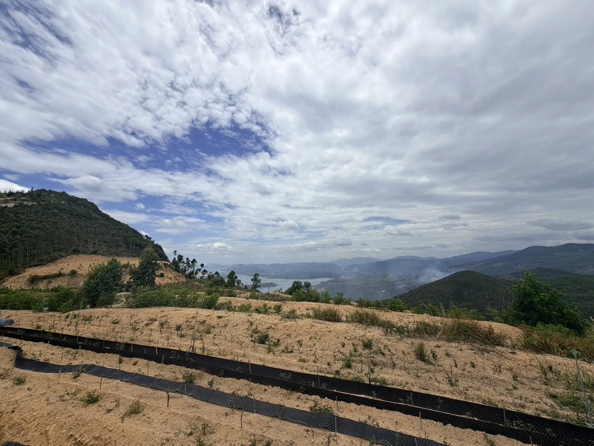
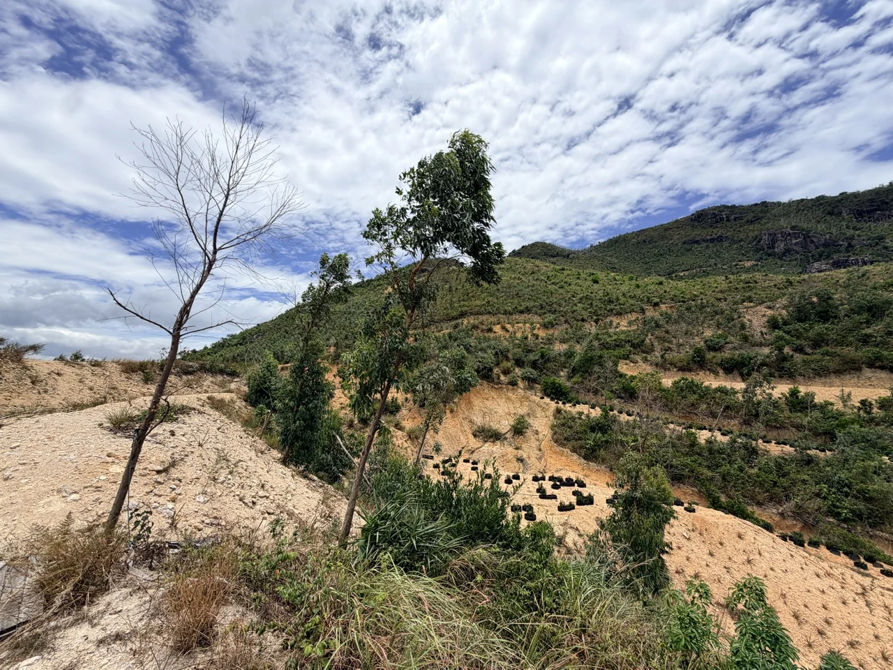
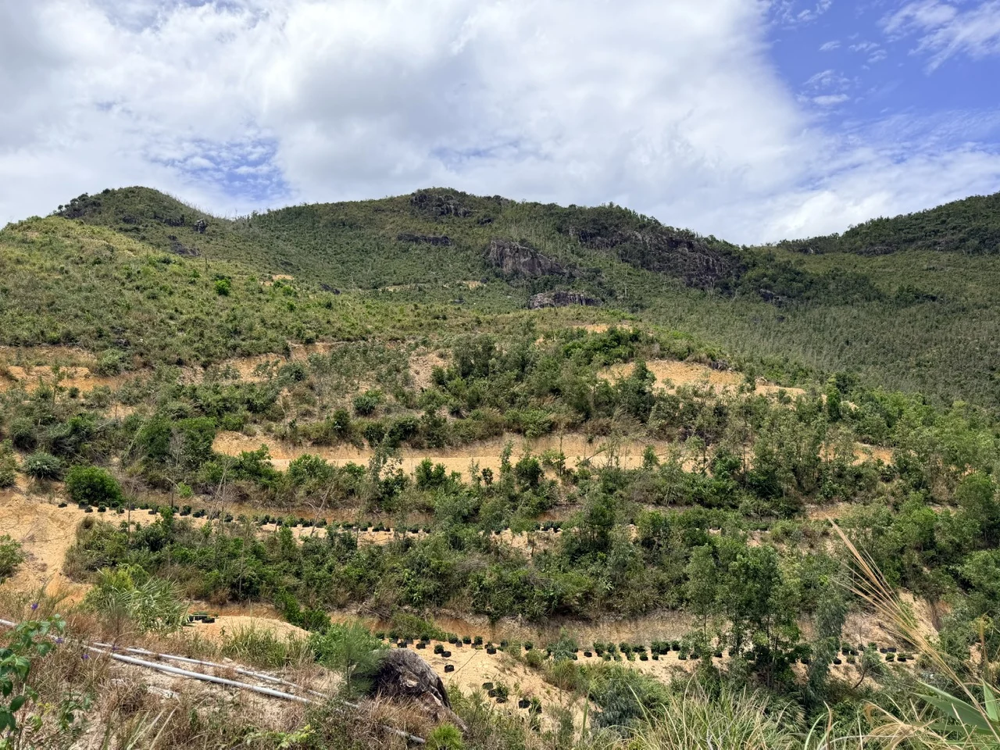
Cù Mông 茶区资料
手工采摘 · [准确地点] · [茶区面积] · [茶树品种]
茶友社群与合作伙伴
照片记录茶园中的人们，以及茶叶摊放、拣选和置于竹筛上的画面。人物身份、具体职责及合作伙伴资料将在确认后补充。
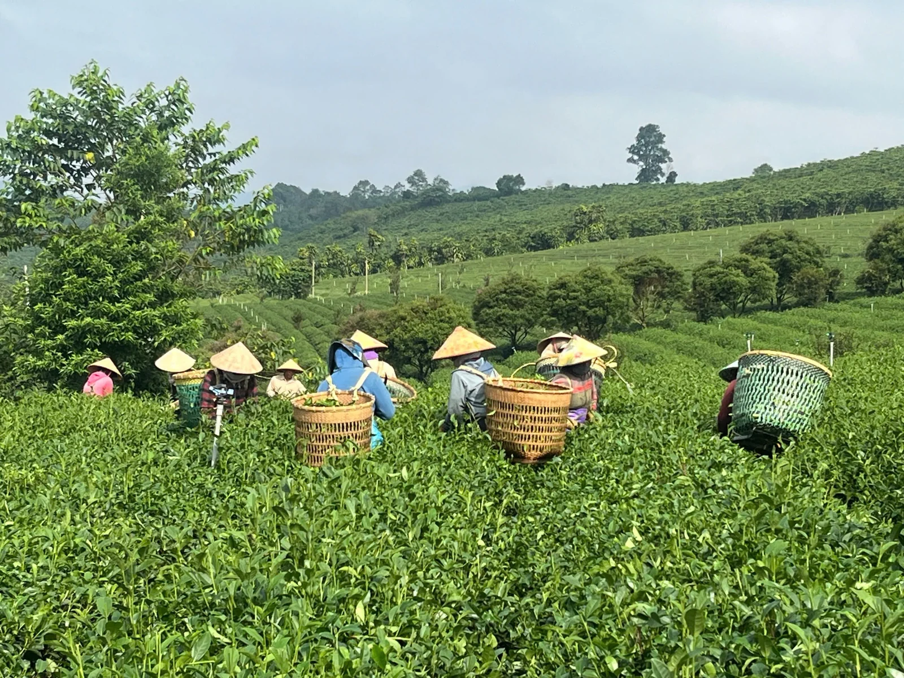
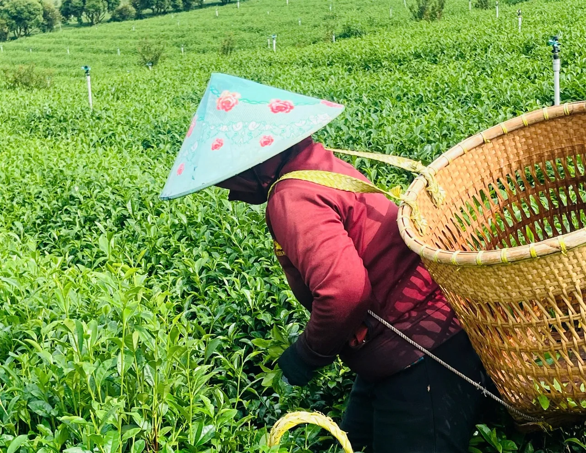
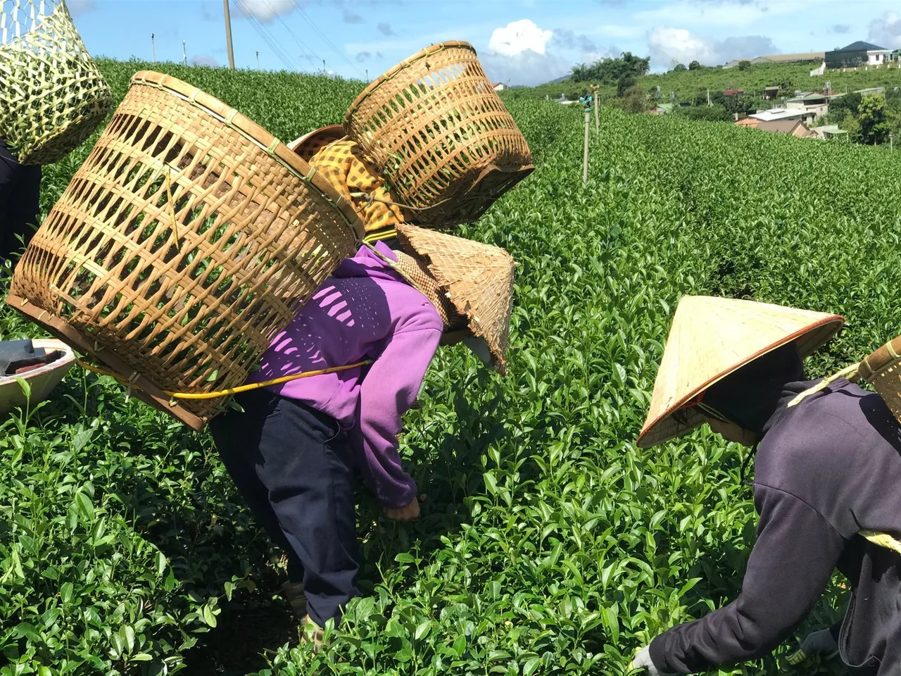
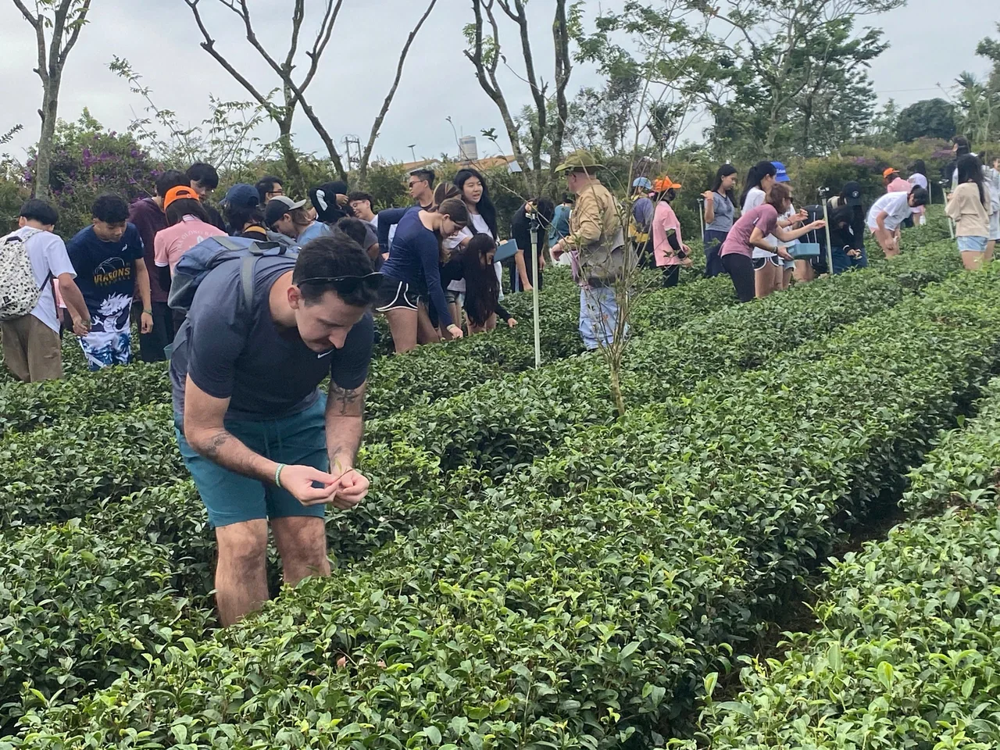
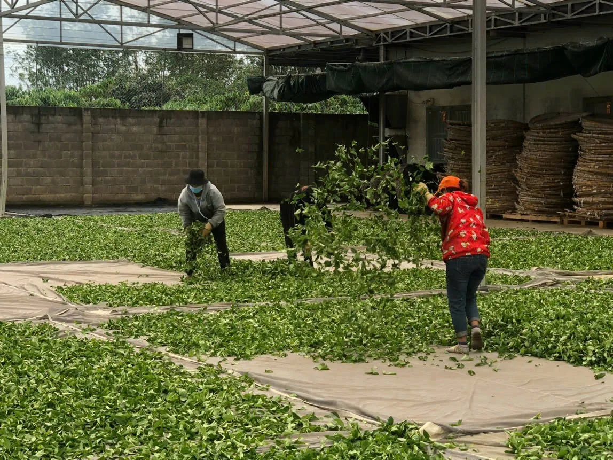
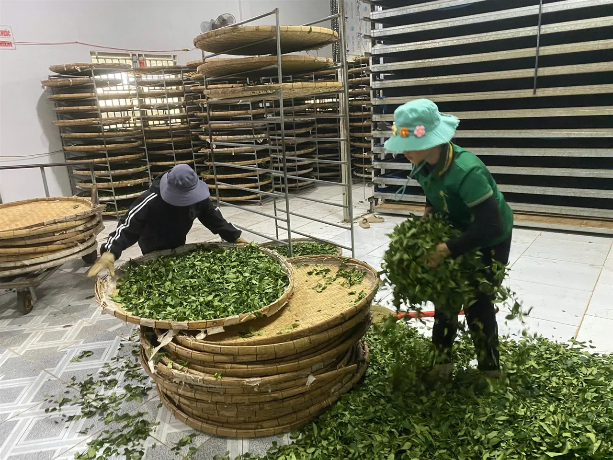
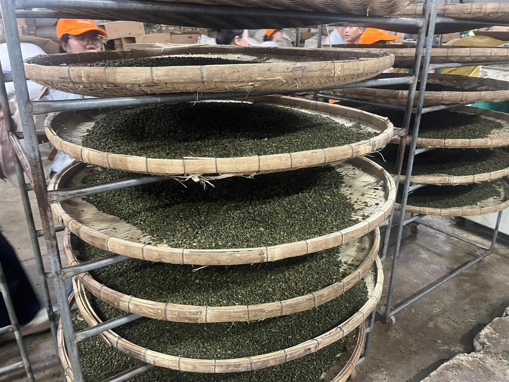
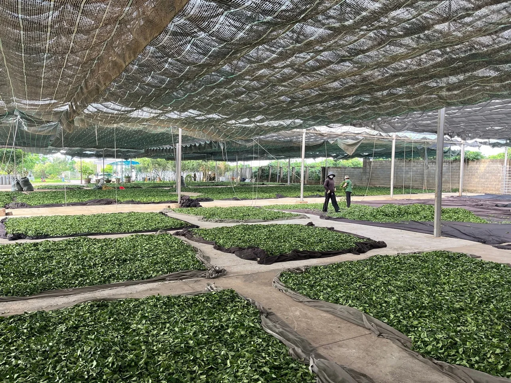
社群与合作伙伴资料
[相关人物及机构的名称、职责和公开许可待确认。]
制茶之旅
每一步都以保留 Cù Mông 山区的天然茶韵和 Mã Dọ 茶的细腻本色为出发点。
采摘过程中珍视每一枚茶芽，细心对待这份珍稀的茶源。
珍视每一枚茶芽保留 Cù Mông 山区的自然香气与滋味；加工过程中不使用增香香精。
不添加增香香精由经验丰富的制茶师傅协助加工，注重品质、细腻度与真实本色。
匠心与经验品质资料
检测信息与品质资料将在内容及公开授权获得确认后发布。
检测结果仅适用于报告所列样品。公开信息应与经确认的文件保持一致。
关于 TS 567
TS 567 海茶讲述山林、海洋与人们多年用心守护自然馈赠的故事。我们希望每一份茶品都成为探索越南茶文化的邀请。
有限的鲜叶收获量提醒我们珍视茶区、保护自然、守护天然本色。
TS 567 — 越南 Mã Dọ 海茶
因自然而稀有，因传承而珍贵。
这款来自越南山区的非凡茶品，以谦逊、真诚和对自然的深切敬意呈献给世界。
TS 567 — 献给懂茶之人的越南珍稀茶。
联系我们
欢迎爱茶人士、茶品收藏者及合作伙伴与我们交流茶品信息和独家经销合作机会。
茶品咨询及独家经销合作洽谈：
预览表单 — 信息不会发送或保存。